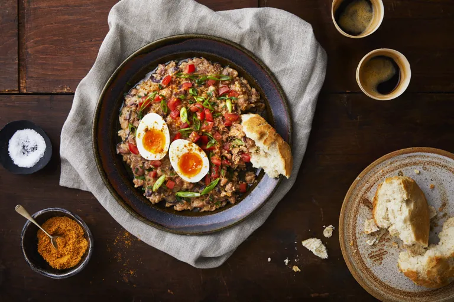

FUL RECIPE

Ingredients
250g of unsalted butter
1 shallot, finely diced
2 garlic cloves, sliced
1 knob of ginger, sliced
1 cinnamon stick
4 black cardamom pods, crushed
1 tsp cumin seeds
1 tsp fenugreek seeds
1 tsp coriander seeds
1 tsp black peppercorns
1 bay leaf
1 onion
2 garlic cloves, minced
100ml of stock
2 tbsp of bird's eye chillies, (dried)
1 tsp cardamom pod
1/2 tsp cloves
1 tsp salt
2 eggs, soft boiled for 6 minutes, peeled and halved
1 plum tomato, finely diced
1 spring onion, finely sliced
1 handful of parsley, chopped
crusty bread rolls
Method
1.Begin by making the niter kibbeh. Place all the ingredients in a pan and slowly simmer for 15–20 minutes. When the solids in the butter start to caramelise, strain the butter through a muslin cloth or coffee filter
2.The niter kibbeh can now be kept refrigerated for up to 2 weeks
3.For the ful medames, heat 3 tbsp of niter kibbeh and gently sauté the diced onion, garlic and berbere spice until soft, about 5 minutes
4.Drain the beans and add to the pan with the stock. Simmer on a low heat until the stock has nearly all evaporated and the beans can be mashed with the back of a wooden spoon
5.As you wait for the beans to cook, prepare the mitmita spice blend. Toast the chillies, cardamom and cloves in a hot dry pan until fragrant. Transfer them to a spice grinder with the salt and blend to a powder. The mitmita can now be kept in an airtight container for 3 months, though is best used within 2 weeks for a more vibrant flavour
6.Spread out the roughly mashed beans onto a serving plate and drizzle with some more niter kibbeh. Top with the boiled eggs, tomato, spring onion and parsley. Serve with a sprinkling of mitmita and some crusty white bread rolls